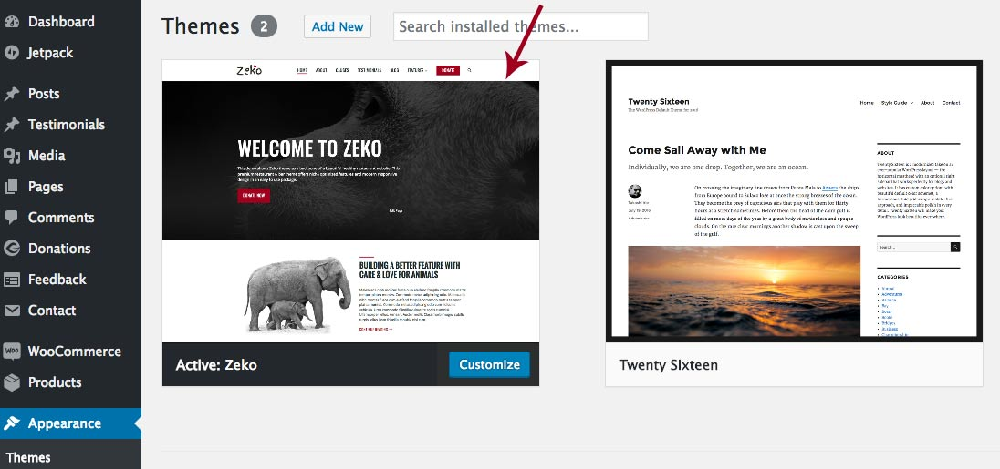
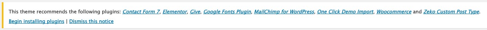
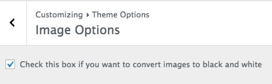

1. General & Installation
1.1 A few words about Zeko
Zeko is a premium responsive WordPress theme optimized for charities and non-profit websites. It is modern, responsive and mobile friendly theme. So, no worries there, Google will love it. Theme offers whole variety of cool features like different blog layouts, different header options, extensive color options and more. It is all very easily customizable directly from the WordPress customizer. Zeko also comes with number of page templates and includes a couple specially styled to support hugely popular plugins like WooCommerce and Give. Above all it is very easy to use, coded according to the latest standards and SEO friendly.
1.2 Getting Started
To install this theme you must have a working version of WordPress already installed. For information regarding the installation of the WordPress platform, please see the WordPress Codex - http://codex.wordpress.org/Installing_WordPress
Theme uses basic, core WordPress options (pages,post,categories) to create site that is easy to use even for very beginners. There is no option panel with many settings in it, all available theme options are available from inside the WordPress "Theme Customizer" that allows site admins to tweak theme settings and see a preview of those changes in a real time. You'll be able to upload your logo or change the site title and tagline, change background color, upload background image, change header image and more.
1.3 Installation
When you are ready to install the theme, you first need to upload theme installation zip file and then activate the theme itself. The theme file can be uploaded in two ways:
- FTP Upload: Using your FTP program, upload the non-ziped theme folder "zeko" into the /wp-content/themes/ folder on your server
- WordPress Upload: Navigate to Appearance » Themes » Add New » Upload. Click browse, and select the ziped theme folder "zeko.zip". Hit "install now" and the theme will be uploaded and installed.
Once the theme is uploaded, you need to activate it.
After activation, you should see Zeko Theme as an active theme:

1.4 Plugins
After theme activation, you'll see a notification bar with recommended plugins.
Plugins are not required for the theme to work, you can decide on your own which one you need and install just that one.
If you want to use one-click demo import and to have your website look the same as the demo, please install all these plugins and follow the instructions for the one-click demo import: .

1.5 Quick Specs (all measurements in pixels)
This is a list of image sizes we used in the theme demo but you are free to upload and use other image sizes.
- Front Page:
Top Featured Image –2600x1047
First Child Page Image –574x423
Second Child Page Image –509x610
Panel One – Background Featured Image –2600x900
Panel Two – Post Featured Image –700x600
Panel Three – Background Featured Image –1816x857
Panel Four – Give Causes Image –900x600 - Content Width -
700. - Full Width Content -
1120. - The sidebar width is -
336.
1.6 How to start?
There are two ways to start building your site with this WordPress theme.
- Starting from scratch with your own content - to start from scratch we recommend following the documentation. Start with the front page, blog, header, menu and footer and then add inner pages.
- Replicate the demo site and then start from there - to replicate the demo follow the instructions for the one-click demo import.
1.7 Convert Images to black and white
This theme offers an option to convert all your images to black and white with just one click. Navigate to the Appearance » Customizer » Theme Options » Image Options and check the box.

If you'd like to have a demo site set up on your server and you don't have time or will to do it yourself let us do it. We offer professional demo setup service for a small fee and quick turn-around time of max. 48 hours. More about this service you can find here: Professional Theme Demo Setup